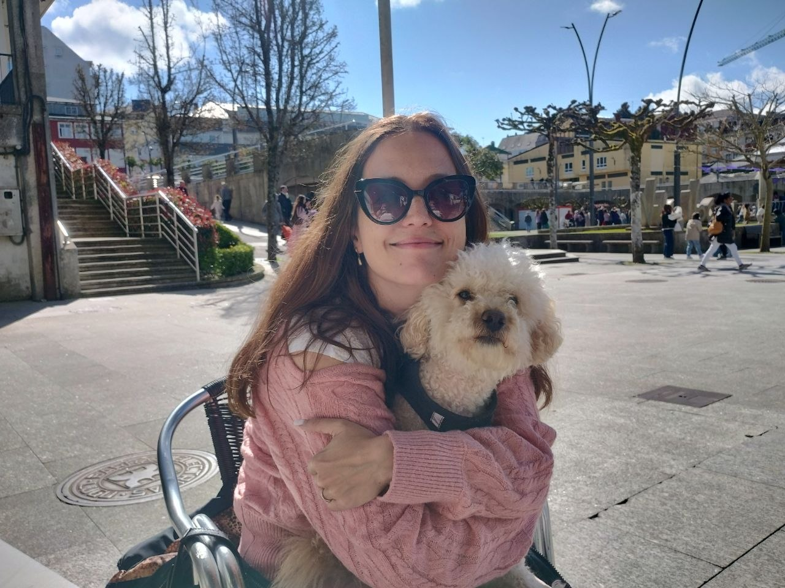
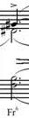

Computational linguist
Olga Zamaraeva
I am a postdoctoral researcher at the University of A Coruña, Spain. I study relationships between human-authored and LLM-generated text, and I am interested in literary machine translation and creative AI. I have a background in syntactic theory.

Research
What I work on
Interest
Human and LLM-generated text
Studying relationships between human-authored and LLM-generated text.
Interest
Literary MT & creative AI
Machine translation of literary texts, and AI for creative work.
Interest
Syntactic theory
Linguistic theory, particularly of syntax.
Dissertation
Constituent questions
Constituent questions in the Grammar Matrix.
Publications
Selected papers
-
More aligned, less diverse? Analyzing the grammar and lexicon of two generations of LLMs
Adrián Gude, Roi Santos-Ríos, Francis Bond, Dan Flickinger, Carlos Gómez-Rodríguez, Olga Zamaraeva
ACL 2026 -
SynNER: Syntax-infused named entity recognition in the biomedical domain
Muhammad Imran, Olga Zamaraeva, Carlos Gómez-Rodríguez
JAMIA Open 2026 -
Comparing LLM-generated and human-authored news text using formal syntactic theory
Olga Zamaraeva, Dan Flickinger, Francis Bond, Carlos Gómez-Rodríguez
ACL 2025 -
Revisiting supertagging for faster HPSG parsing
Olga Zamaraeva, Carlos Gómez-Rodríguez
EMNLP 2024 -
Spanish Resource Grammar version 2023
Olga Zamaraeva, Lorena S. Allegue, Carlos Gómez-Rodríguez
LREC-COLING 2024 -
20 years of the Grammar Matrix: Cross-linguistic hypothesis testing of increasingly complex interactions
Olga Zamaraeva, Chris Curtis, Guy Emerson, Antske Fokkens, Michael Wayne Goodman, Kristen Howell, T.J. Trimble, Emily M. Bender
Journal of Language Modelling 2022 -
A cross-linguistic account of wh-questions for a grammar engineering resource
Olga Zamaraeva. PhD dissertation, University of Washington
2021
The full list of publications is in my CV and on Google Scholar. More about the Grammar Matrix.
Teaching
Courses I designed
Music
Next performance

Here I sometimes say a few words about the next musical performance that I plan on attending.
Where I come from
Akademgorodok
I was born and grew up in a fantastic place called Akademgorodok near Novosibirsk, Russia. You can see a lot of forest if you zoom out.
It is a town built specifically for a University and a number of research institutes. My parents both worked in such institutes, and so did parents of most of my friends, and maybe that's why I decided to become a researcher myself.